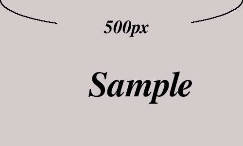
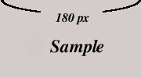
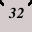
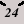
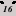

我要投稿

自由軟體鑄造場電子報秉持開放、自由、分享的精神，自即日起開放文章徵稿，希望以此廣納更多自由軟體新知於本報中。
您若有任何與自由軟體相關的主題，不論是嵌入式、資安、雲端運算等領域的技術分享；文書、多媒體、美工排版等一般應用軟體介紹；授權法律、自由軟體政策、市場趨勢觀察等（但不特別限定以上題目），皆非常歡迎投稿給本報與其他讀者分享。
每篇文章投稿字數以不超過 5,000 字為限，並請您附上個人背景資料，以不超過150字為宜，包含筆名、本名、聯絡方式（e-mail & 電話）、部落格 (blog)、噗浪 (Plurk)、臉書 (Facebook) 等其他任何您想讓讀者知悉的網路個人社交資訊。收到稿件後，我們會儘快進行內部審閱，審閱過程中如有任何問題，會依照您提供的聯絡方式跟您聯繫討論。
稿件一經錄用，將以刊登字數為基準，依照中研院的標準給予每字 0.6 - 1 元的稿酬，但若該篇文章已經在其他雜誌、刊物，及相同類別的資訊平台發表，則無法提供稿費 (經自由軟體鑄造場同意重新彙編改寫者，則不在此限)，更詳盡的授權方式，以下投稿規範有進一步的說明。未錄用的文章，則不再另行聯絡。
而為了拓深自由軟體研究與應用知識的散播範圍，自由軟體鑄造場工作團隊將不定期從已發布之電子報文章中，挑選適宜者轉投國內外其他資訊傳播媒體，而若轉投的文章已經自由軟體鑄造場提供首次發佈的稿酬，則接受轉投之資訊媒體與自由軟體鑄造場，將不再提供再次發佈之稿酬。
投稿請寄至 This e-mail address is being protected from spambots. You need JavaScript enabled to view it ，自由軟體鑄造場電子報編輯小組保留適度增刪修改的權利，若文章事涉侵權事宜，其法律責任由撰稿者自行負責，詳細投稿相關規範如下：
投稿語系及字數
- 每篇文章以不超過 5,000 字為宜。
- 一般稿件每字 0.6 - 0.8 元，專業技術文件每字 0.6 - 1 元。
- 投稿語系以繁體中文為主。
- 英文稿件，請附上 300~500 字中文摘要。
- 簡體中文稿件，請給簡體中文全文版文章連結。
投稿文件格式
- 投稿請用 markdown 標記語言編輯並使用 mkd 檔案。初學者可以參考這篇文章。
- 圖片格式請採用 jpg、png 檔，建議圖片寬度最小不小於 180px，最大不超過 500px，解析度為網頁專用即可，並請註明圖片來源。
- 文案如有連結，請不要使用超連結，建議用 -- 例如：OSSF (https://www.openfoundry.org/) 的呈現方式提供給我們，我們在編輯上稿時，會特別留意 OSSF 的連結設定。
- 交稿時，請將文稿及其內嵌圖片以一整個壓縮檔案的方式提供，亦即「壓縮檔」內含「文稿本身」及「文稿裡內嵌的圖片」。
- 文稿內有插入圖片時，請註明此圖片在壓縮檔裡的檔案名稱，並以一句話簡述此圖片所欲表達的內容。
- 圖文撰寫方式，特別是教學文件，其呈現樣式有兩種，一種是圖片呈現在一個段落後，一種是圖片呈現在句子當中，細節請參照下列「圖片編碼規則」的說明。
授權方式
自由軟體鑄造場工作團隊自行採訪、報導、編譯、撰寫文章之智慧財產權利屬於中央研究院。非自由軟體鑄造場團隊自行撰寫的單篇文章，其智慧財產權利屬於原作者所有，稿件經鑄造場錄用後，該篇文章仍可依原作者的安排自行向外刊登，但需先以非專屬的方式授權予自由軟體鑄造場運用，而與本電子報其他文章併以創用 CC「姓名標示－禁止改作－非商業性」授權條款臺灣 3.0 及其後版本的方式對外進行散布。
授權條款全文請見： https://creativecommons.org/licenses/by-nc-nd/3.0/tw/legalcode。
授權條款簡介請見： https://creativecommons.org/licenses/by-nc-nd/3.0/tw/deed.zh_TW。
若對上述的授權政策有所疑問，歡迎隨時透過電子報聯絡信箱 This e-mail address is being protected from spambots. You need JavaScript enabled to view it ，與自由軟體鑄造場工作團隊聯絡。
圖片編碼規則
文章中的圖文呈現方式有兩種，特別在撰寫教學文章時，會常常碰到，一種是圖片呈現在一個段落後，一種是圖片呈現在句子當中，以下用範例，並標示圖片 大小還有圖檔編碼原則，建議投稿作者，依此規則提供檔案。
第一種，圖片呈現在一個段落後，圖片格式請採用 jpg、png 檔。建議圖片寬度最大不超過 500px ，最小不小於 180px，解析度為網頁專用即可，並請註明圖片來源。
 (圖1_500px)
 (圖2_180px)
第二種，圖片呈現在句子當中，圖片格式請採用 jpg、png 檔。建議圖片有三種規格可以選，寬度最大不超過32px ，最小不小於16px。
例如：這是寬度32px  (圖3_32px)
 例如：這是寬度24px (圖4_ 24px)
例如： 這是寬度16px (圖5_16px)
作者可以在這個規範下，依據需求，提供合適大小的圖檔。
請注意
- 請在圖片下方標示圖檔名稱，方便我們上傳稿件時，查找正確的圖檔，建議用(圖x_名稱)，x從1、2、3.....，以此類推，依序往後 編號，並在底線後加註圖片名稱，名稱由作者自行訂定即可。
- 來函文章內若嵌有圖片，請將文件檔案併圖片檔以一個壓縮檔的方式投稿，例如壓縮檔裡內含有 txt、html 與 odt 格式的文件檔外，且另外夾附該文件檔內嵌所有的個別圖檔，實例請見以下範例。
- 範例一：
- 壓縮檔名稱為「圖文範例.zip」
- 壓縮檔「圖文範例.zip」內含：
- 圖文範例.odt 與 圖文範例.pdf
- 圖1_500px.png
- 圖2_180px.png
- 圖3_32px.png
- 圖4_24px.png
- 圖5_16px.png
- 範例二：
- 壓縮檔名稱為「Gnumeric.zip」
- 壓縮檔「Gnumeric.zip」內含：
- Gnumeric.txt
- Gnumeric_01.png
- Gnumeric_02.png
- Gnumeric_03.png
- Gnumeric_04.png
- Gnumeric_05.png
撰稿用字類 (建議但不強迫採用)
- 在中文文章中，請在英數字前後加上一半形空格。
- 數字標準用法
- 一律用阿拉伯數字表示 – 如：有 1 項調查指出；最近共有 5 位人士到訪。
- 數字超過 1,000 以上，要加千分位 – 如：每日可節省美金 1,488 元
- 超過 1 萬以上的表示法 – 如︰港幣 54 萬 3,120 元（約新台幣 228 萬 4,055 元）。
- 錯誤用法– 如︰港幣 543,120 元（約新台幣 2,884,055元）。
- 例外情況 – 成語如：有一就有二、無三不成禮 繼續用中文數字 – 「近一年」、「近二年」、「一律」、「兩難」。
- 儘量避免英文文法／台語文法出現在中文文章中（除非你的筆法屬鄉土文學類），例如：倒裝和被動（中文很少用英文文法中的倒裝句和被動態）；要來去（明顯的台語文法）；進行一個文件的查詢（用「查詢文件」即可）。
- 注意常錯字「做／作」（「做」是指實際進行一件事；「作」大部分時間當成「當作」解）；「再／在」（「再」是再一次、再度；「在」是指目前的狀況、位置）；「的／得／地」（形容詞用「的」；副詞用「地」；動詞用「得」）。
標點符號類 (建議但不強迫採用)
- 使用全形及正確的中文標點符號，請注意中文標點必為全形，易錯的幾個是：
- ……（中文刪節號，必須為六點置中）。
- （）（中文括號，必須為全形，也就是必須佔兩個字元）。
- ／（中文斜線，亦為全形）。
- 括號和引號中為中文時，使用「」；為英文時使用 " "。
- 英文專有名詞的引號用 " " – 如：openSUSE Education 計劃希望開發出一張 "openSUSE EDU-CD" 光碟。
- 中文專有名詞的引號用「」 – 如：OSSF 計畫舉辦「自由軟體教學工作坊」。
- 破折號以 1 個全型 "－" 表示，刪節號以 2 個全型 "…" 表示。
- 要注意 m-dash 和 n-dash 的不同，n-dash（–，Mac上按法是 option + -），通常用於表示範圍，例如年代「1900–1918」等；而 m-dash（—，也就是破折號），才是用來承接上下文。
- 專有名詞的表示法：先寫中文，再半形括號英文全名及簡稱；簡稱和全名間用半形逗點表示，半形逗點後面要空一格 – 如：自由軟體基金會 (Free Software Foundation, FSF) 。
- 英文標註為半形括號，與中文空一格 – 如：對此軟體進行除錯 (Debug) 反應及提供改版建言。
- 如果括號內的文字為中文或中英／數字夾雜，則該括號為全型括號，不用與中文間空格 – 如：我們使用 Linux 作為伺服器（同時作為過濾垃圾郵件及病毒的伺服器），……。
- 文章中提到文件名時，用「」表示；提及書名時才用《》。
- 標號第一層使用 1、2、3、4……；第二層使用 a、b、c、d……；第三層使用 1)、2)、3)、4) 。
軟體教學文件注意事項 (建議但不強迫採用)
- 教學文章中提到按鈕時用〔〕；提及功能表選項時用【】；其他物件如連結、核取方塊時用「」。
- 統一名詞：Check box=核取方塊；Dialog Window=對話視窗；Tab=活頁標籤；section=區塊。
- 不同的系統有不同的選單和對話選項，如Windows要你選擇「Yes」時用「是」；Mac OSX則使用「好」，寫和翻譯的時候請注意。
聯絡我們
● TEL：02-2788-3799 #1469、1474。
● Email：
This e-mail address is being protected from spambots. You need JavaScript enabled to view it
。
● Skype：直撥「openfoundry」帳號即可。